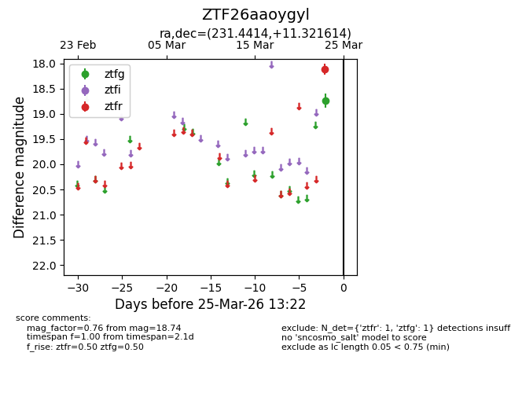
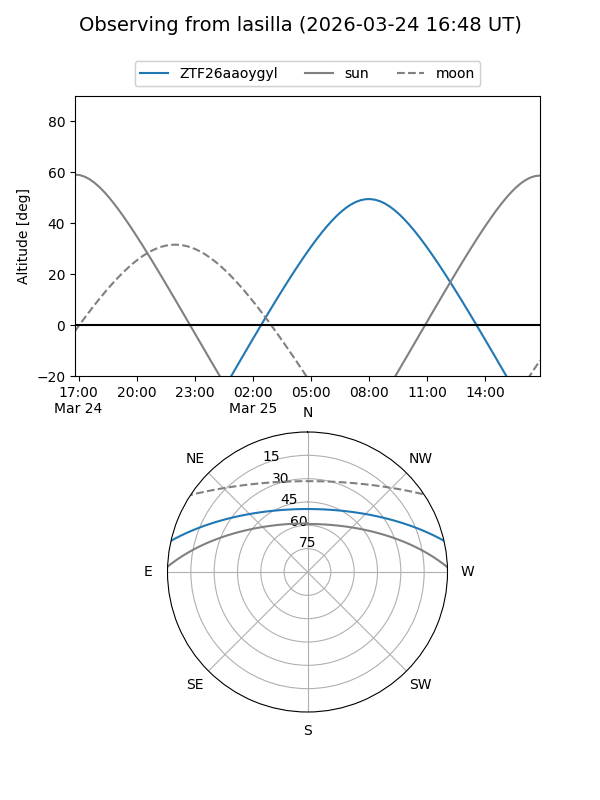
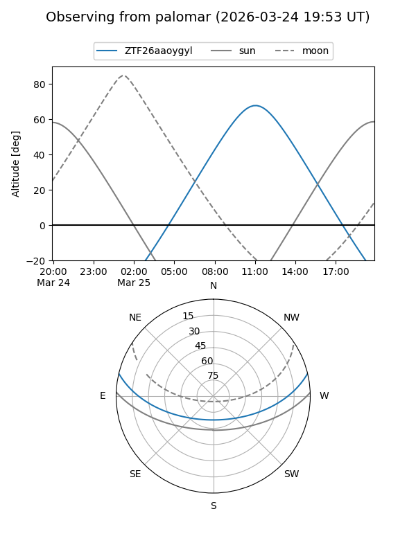

ZTF26aaoygyl
Target ZTF26aaoygyl at 2026-03-25 13:25
Aliases and brokers:
FINK: link
Lasair: link
ALeRCE: link
alt names
ZTF26aaoygyl (ztf,fink_ztf)
Coordinates:
equatorial (ra, dec) = 231.4414,+11.32161
equatorial (HMS+DMS) = 15:25:45.93,+11:19:17.81
galactic (l, b) = (16.9794,+50.50662)
Flags:
Photometry:
last ztfg=18.74, ztfr=18.11
1 ztfg, 1 ztfr detections
Lightcurve

Visibility


Additional plots